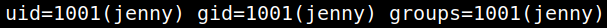
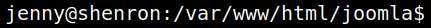

4.4 Switch user
1. Switch to “jenny” user with the credentials from the previous step..
$su jenny
$whoami
$id
$whoami
$id
Output:

2. Get a PTY shell (Pseudo-terminal).
$shell=/bin/bash script -q /dev/null
$export TERM=xterm
$export TERM=xterm
Output:
